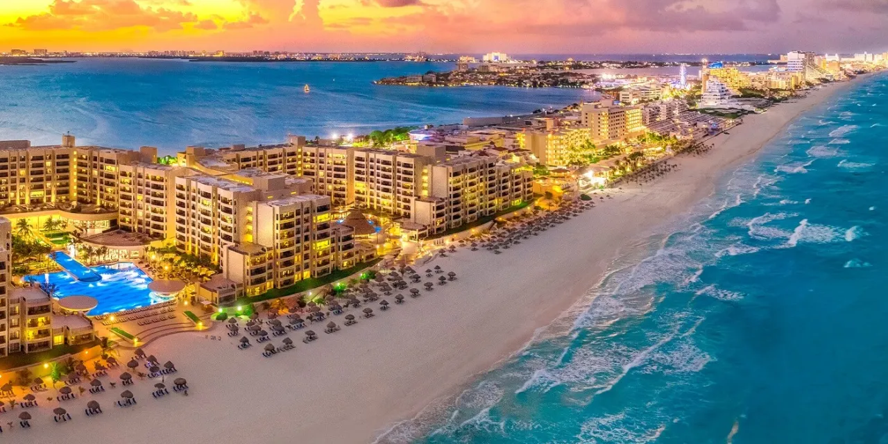

Italia
Italia ofrece una rica historia, arquitectura impresionante, y paisajes inolvidables, siendo un destino ideal para todo tipo de viajeros.

Encuentra tu próximo destino basado en tus preferencias
Descubre los destinos ideales para tu próximo viaje según tus preferencias. Conoce lo que ofrecen las mejores playas, templos y países del mundo.
Cancún es conocida por sus hermosas playas de aguas cristalinas y arenas blancas.
El Templo de Angkor Wat es uno de los templos más grandes y famosos del mundo, ubicado en Camboya.
Italia ofrece una rica historia, arquitectura impresionante, y paisajes inolvidables, siendo un destino ideal para todo tipo de viajeros.